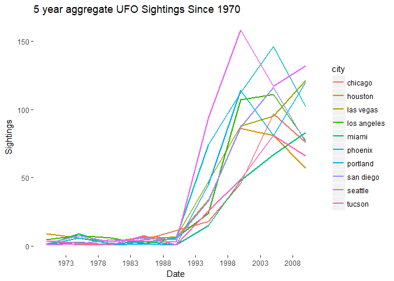
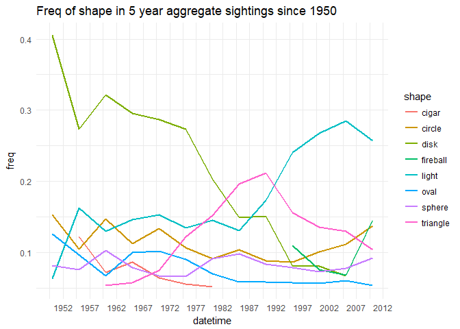

Data Analysis: Everything You've Ever Wanted to Know about UFO Sightings
In this analysis, we will break down the NUFORC UFO sighting data to see if there are any patterns in UFO sightings through the years. You can access the data here: nuforc
My UFO Sighting in San Diego, California
This topic has interested me ever since I saw a UFO in the middle of broad daylight in San Diego, CA in the 3rd grade. It was just another Sunday afternoon at the local park in La Mesa, CA. My friend and I watched as a shiny, silver disk floated effortlessly and silently in the blue sky and shot across the lengths of entire clouds instantaneously. I distinctly remember the way in which the sun glared off the metallic exterior of the craft–it was just like the UFOs in the movies. Shocked, we ran and told our parents, who then came and observed the flying saucer for another 10 minutes or so. Eventually, the UFO shot up into the atmosphere at a speed that an only be described as inhuman.
Ever since then I’ve tried to figure out what exactly UFOs might be. Could a government be so stupid as to test new technology in the middle of the day in San Diego? Not likely. I thus have two alternative explanations for UFOs: 1) They are indeed alien spacecraft; and 2) they are human spacecraft from the future. Time travellers have come back to our time via these fast-as-light spacecraft–and that’s why they don’t care about appearing in the middle of the day.
So, now that I’m sure you think I’m crazy (even my Mom, who wasn’t there that day, to this day doesn’t believe me), let’s see if we can find anything that might help us to decide whether UFOs are indeed human or alien.
library(tidyverse)
library(ggmap)
library(stringr)
df <- read.csv('ufo.csv', stringsAsFactors = FALSE)
#delete any cities with punctuation. focus on US
#if you put df[which...] then you get a data frame back. we just want vec of index
bad <- which(str_detect(df$city, '[[:punct:]]'))
df <- df[-bad,]
df %>%
count(city, state, shape)%>%
arrange(desc(n))%>%
head()
## # A tibble: 6 x 4
## city state shape n
## <chr> <chr> <chr> <int>
## 1 seattle wa light 113
## 2 phoenix az light 90
## 3 san diego ca light 78
## 4 portland or light 77
## 5 las vegas nv light 68
## 6 los angeles ca light 63
library(tidytext)
#START UFO TEXT PROCESSING HERE
big <- df %>%
unnest_tokens(word, comments, token='ngrams', n=2)%>%
anti_join(stop_words)%>%
count(word, sort=TRUE)
#solve problem of bigrams with stop words
bigrams_separated <- big %>%
separate(word, c("word1", "word2"), sep = " ")
#keep only alphabetical words and longer than 2 letters
bigrams_filtered <- bigrams_separated %>%
filter(!word1 %in% stop_words$word) %>%
filter(!word2 %in% stop_words$word)%>%
filter(str_detect(word1, '[[:alpha:]]'))%>%
filter(str_detect(word2, '[[:alpha:]]'))%>%
filter(nchar(word1) > 2)%>%
filter(nchar(word2) > 2)%>%
filter(word1 != 'ufo')%>%
filter(word2 != 'ufo')
#most common types of lights seen
lights <- bigrams_filtered %>%
filter(word2 == 'light' | word2 == 'lights')%>%
unite('bigram', -n, sep=' ')
#What type of shapes?
shapes <- bigrams_filtered %>%
filter(word2 == 'shape' | word2 == 'shaped')%>%
unite('bigram', -n, sep=' ')
#movement
mvt <- bigrams_filtered %>%
filter(word2 =='movement' | word2 == 'movements')%>%
unite('bigram', -n, sep=' ')
#type object
obj <- bigrams_filtered %>%
filter(word2 == 'object' | word2 == 'objects')%>%
unite('bigram', -n, sep=' ')
speed <- bigrams_filtered %>%
filter(word2 == 'speed' | word2 == 'speeds')%>%
unite('bigram', -n, sep=' ')
Visualizing UFO Characteristics by Treemap
Treemaps work by making the area of the rectangles proportional to some variable in our dataframe. In this case, we have counts of the bigrams, so we will set the size of the rectangles to reflect the count of each pair. Hopefully this will tell us something interesting about the most common characteristics of UFOs.
# library
library(treemap)
# treemap. the size of the box is proportional to its count among all speeds
treemap(speed,
index="bigram",
vSize="n",
type="index",
fontsize.labels = 6,
title= 'Types of speed seen in UFO sightings'
)

treemap(obj,
index="bigram",
vSize="n",
type="index",
fontsize.labels = 6,
title= 'Types of objects seen in UFO sightings'
)
treemap(mvt,
index="bigram",
vSize="n",
type="index",
fontsize.labels = 6,
title= 'Types of movements seen in UFO sightings'
)
treemap(shapes,
index="bigram",
vSize="n",
type="index",
fontsize.labels = 6,
title= 'Types of shapes seen in UFO sightings'
)
treemap(lights,
index="bigram",
vSize="n",
type="index",
fontsize.labels = 6,
title= 'Types of lights seen in UFO sightings'
)
Visualizing by Lollipop chart
Another way to represent the same information is a lollipop chart. These are essentially slicker-looking versions of bar charts, where the length of the bar is proportional to some column in our dataframe. Remember that in ggplot2, we use the aes() argument to map variables (i.e., columns) onto our plots. This is an extremely useful aspect of ggplot.
Lollipop chart of states
#city state counts of sightings
state_counts <- df %>%
filter(state != '')%>%
count(city, state, sort=TRUE)%>%
unite('location', -n, sep=',')
#visualize with lollipop chart
state_counts %>%
filter(n > 90)%>%
mutate(x = factor(location))%>%
ggplot(aes(x, n))+
geom_segment(aes(x=reorder(x,n), xend=x, y=0, yend=n), size=1)+
geom_point(color='red', size=2, alpha=.6)+
coord_flip()+
theme_minimal() +
theme(axis.text.y = element_text(size = 7))+
labs(title='Which cities have had the most sightings?')
#count cities and shape
df %>%
filter(!shape %in% c('', 'unknown', 'other', 'light'))%>%
count(city, shape, sort=TRUE)%>%
filter(n > 20)%>%
unite('type', -n, sep=' ')%>%
mutate(type = factor(type))%>%
ggplot(aes(type, n))+
geom_segment(aes(x=reorder(type,n), xend=type, y=0, yend=n), size=1)+
geom_point(color='red', size=2, alpha=.6)+
coord_flip()+
labs(title='What shapes are most commonly seen in each location?',
x = 'City and Type of Shape', y='# of sightings')+
theme_minimal()
Time series visualizations of UFO sightings
Using lubridate to find patterns over time
The lubridate package is great. It makes working with dates and times as easy as could be imagined–if you’re familiar with xts or ts objects, you’ll know that working with dates and times in R can be frustrating and cumbersome.
One really handy function is floor_date(), which allows you to essentially aggregate observations into buckets of time. In this sense it is similar to how you might choose your bin size in a histogram, but here we are choosing what interval of time to consider a ‘bin’ or ‘bucket.’ As you change the interval (i.e., unit of time), you’ll see different patterns emerge as the zoom level of the data increases and decreases. You’ll need to use your judgment to figure out which level of aggregation best fits your needs.
library(lubridate)
#biggest single events reported one time tinley park 17 counts
df$datetime <- mdy_hm(df$datetime)
#6 month intervals
df %>%
mutate(datetime = floor_date(datetime, unit='1 year'))%>%
group_by(datetime)%>%
filter(datetime > '1939-01-01')%>%
summarize(cts = n())%>%
ggplot(aes(datetime, cts))+
geom_line()+
scale_x_datetime(date_breaks = '5 years', date_labels = '%Y') + theme(plot.subtitle = element_text(vjust = 1),
plot.caption = element_text(vjust = 1),
panel.background = element_rect(fill = NA)) +labs(title = "UFO Sightings Since 1939",
x = "Date", y = "Sightings")

#which states most?
df %>%
count(state, sort=T)%>%
slice(1:10)
## # A tibble: 10 x 2
## state n
## <chr> <int>
## 1 ca 8998
## 2 wa 3949
## 3 fl 3792
## 4 tx 3445
## 5 ny 2635
## 6 il 2460
## 7 az 2454
## 8 pa 2406
## 9 oh 2301
## 10 mi 1930
#top 10 states
df %>%
mutate(datetime = floor_date(datetime, unit='1 year'))%>%
group_by(datetime, state)%>%
filter(datetime > '1950-01-01')%>%
filter(state %in% c('ca', 'wa', 'fl', 'tx','ny', 'il','az','pa','oh','mi'))%>%
summarize(cts = n())%>%
ggplot(aes(datetime, cts, color=state))+
geom_line(size=1, alpha=.5)+
scale_x_datetime(date_breaks = '5 years', date_labels = '%Y') +
theme(plot.subtitle = element_text(vjust = 1),
plot.caption = element_text(vjust = 1),
panel.background = element_rect(fill = NA)) +labs(title = "UFO Sightings Since 1950",
x = "Date", y = "Sightings")
#which cities?
cities <- df %>%
count(city, sort=T)%>%
slice(1:10)
cities <- cities[,1]
cities
## # A tibble: 10 x 1
## city
## <chr>
## 1 seattle
## 2 phoenix
## 3 portland
## 4 las vegas
## 5 los angeles
## 6 san diego
## 7 houston
## 8 chicago
## 9 tucson
## 10 miami
#tracking 10 cities
df %>%
mutate(datetime = floor_date(datetime, unit='5 years'))%>%
group_by(datetime, city)%>%
filter(datetime > '1970-01-01')%>%
filter(city %in% c('seattle', 'phoenix','portland', 'san diego', 'los angeles', 'houston', 'las vegas', 'chicago', 'tucson', 'miami'))%>%
summarize(cts = n())%>%
ggplot(aes(datetime, cts, color=city))+
geom_line(size=1, alpha=.5)+
scale_x_datetime(date_breaks = '5 years', date_labels = '%Y') +
theme(plot.subtitle = element_text(vjust = 1),
plot.caption = element_text(vjust = 1),
panel.background = element_rect(fill = NA)) +labs(title = "5 year aggregate UFO Sightings Since 1970",
x = "Date", y = "Sightings")
#how have shapes changed over time? 1 year aggregrates
df %>%
mutate(datetime = floor_date(datetime, unit='1 year'))%>%
filter(datetime > '1950-01-01')%>%
group_by(datetime, shape)%>%
filter(!shape %in% c('', 'changed', 'changing', 'other', 'unknown'))%>%
summarize(cts = n())%>%
ggplot(aes(datetime, cts, color=shape))+
geom_line(size=1, alpha=.6)+
scale_x_datetime(date_breaks = '5 years', date_labels = '%Y')+
theme_minimal()

#in 5 year intervals proportion of shapes sighted. interesting. min 5% shapes
df %>%
mutate(datetime = floor_date(datetime, unit='5 years'))%>%
filter(datetime > '1950-01-01')%>%
group_by(datetime, shape)%>%
filter(!shape %in% c('', 'changed', 'changing', 'other', 'unknown'))%>%
summarize(cts = n())%>%
mutate(freq = cts/sum(cts))%>%
filter(freq > .05)%>%
ggplot(aes(datetime, freq, color=shape))+
geom_line(size=1, alpha=.6)+
scale_x_datetime(date_breaks = '5 years', date_labels = '%Y')+
theme_minimal()+
labs(title='Freq of shape in 5 year aggregate sightings since 1950')
#proportion of shapes in CA, WA, and TX in 20 year intervals
df %>%
mutate(datetime = floor_date(datetime, unit='20 years'))%>%
filter(datetime > '1950-01-01')%>%
group_by(datetime, shape, state)%>%
filter(state %in% c('ca', 'wa', 'tx'))%>%
filter(!shape %in% c('', 'changed', 'changing', 'other', 'unknown'))%>%
summarize(cts = n())%>%
ungroup()%>%
group_by(datetime, add=TRUE)%>%
mutate(freq = cts/sum(cts))%>%
filter(freq > .05)%>%
ggplot(aes(datetime, freq, color=shape))+
geom_line(size=1, alpha=.6)+
scale_x_datetime(date_breaks = '20 years', date_labels = '%Y')+
facet_wrap(~ state)+
theme_minimal()+
labs(title='Freq of shape in 20 year aggregate sightings since 1950')
What can we learn from this?
- Disks peaked in the 50s and hardly ever appear now.
- Lights were rare until the late 70s and then exploded.
- Triangles seem to have peaked in the early 80s.
- Fireballs started in the late 80s and quickly died out.
- Cigars died out in the 1960s. Aliens’ leases expired and they traded up for lights?
All this makes me skeptical: What’s happening to the classic metallic flying saucers that I saw that afternoon in San Diego? Where did they go?
While analyzing these data I discovered some interesting and lesser-known sightings. If you want to actually see what happened in some of these locations, you can watch the videos of the incidents here:
Tinley Park: http://www.chicagotribune.com/suburbs/daily-southtown/lifestyles/ct-stc-dekker-column-st-0924-20150922-story.html
Rockford: http://97zokonline.com/5-times-people-saw-ufos-over-rockford-videos/
Can we visualize the descriptions of UFOs as a network of nodes and edges?
The igraph and ggraph packages will help us here. And I highly recommend the free online book https://www.tidytextmining.com/ngrams.html, by David Robinson and Julia Silge.
#need 3 things after have igraph object: node edges and labels
library(igraph)
library(ggraph)
big_graph <- bigrams_filtered %>%
filter(n > 200)%>%
graph_from_data_frame()
#then we use ggraph to use ggplot's grammar of graphics approach to visualizing these links
ggraph(big_graph, layout = "fr") +
geom_edge_link() +
geom_node_point() +
geom_node_text(aes(label = name), vjust = 1, hjust = 1)+
theme_minimal()

# improved version: via the great tutorial here https://www.tidytextmining.com/ngrams.html
#for some reason the edge_alpha argument isn't changing. It should make alpha levels proportional to the number of occurrences in the text.
a <- grid::arrow(type = "open", length = unit(.05, "inches"))
ggraph(big_graph, layout = "fr") +
geom_edge_link(aes(edge_alpha = n), show.legend = FALSE,
arrow = a, end_cap = circle(.07, 'inches')) +
geom_node_point(color = "red", size=2) +
geom_node_text(aes(label = name), vjust = 2, hjust = 1) +
theme_void()
This graph gives a nice overview of the major descriptions of the UFOs. The direction of the arrows indicate whether the word was the 1st or 2nd word in the bigram pair. I’m definitely going to need to look more deeply into this package as there are a lot of setting to tweak. For now, the aes(edge_alpha)=n does not appear to be working…
Geographic visualization of UFO hotspots
In order to plot using latitude and longitude, we’ll follow the same strategy I outlined in my ggmaps tutorial: groupby location then average the lat and lon of each city. If you want to see how that was done, go here: https://greenet09.github.io/datasophy/2018/06/29/san-diego-airbnb.html
us_map <- get_map('USA', zoom = 3,maptype = 'satellite')%>%
ggmap()
us_map

#cities with more than 1 sighting
over_50 <- df %>%
count(city,state)%>%
filter(n > 1)%>%
unite('location', -n, sep=',')
head(over_50)
## # A tibble: 6 x 2
## location n
## <chr> <int>
## 1 29 palms,ca 2
## 2 abbeville,la 4
## 3 abbeville,sc 2
## 4 aberdeen,md 5
## 5 aberdeen,nj 2
## 6 aberdeen,sd 2
#Now it's in the shape we need to plot. Not gunna lie: this took me like 10 mins to get working
lat_long <- df %>%
unite('location', c('city','state'), sep=',')%>%
filter(location %in% over_50$location)%>%
mutate(latitude = as.numeric(latitude),
longitude = as.numeric(longitude))%>%
group_by(location)%>%
summarize(lon = mean(longitude, na.rm=TRUE),
lat = mean(latitude, na.rm=TRUE),
cts = n())%>%
ungroup()
head(lat_long)
## # A tibble: 6 x 4
## location lon lat cts
## <chr> <dbl> <dbl> <int>
## 1 29 palms,ca -116.05417 34.13556 2
## 2 abbeville,la -92.13417 29.97444 4
## 3 abbeville,sc -82.37917 34.17806 2
## 4 aberdeen,md -76.16444 39.50944 5
## 5 aberdeen,nj -74.22212 40.41710 2
## 6 aberdeen,sd -98.48611 45.46472 2
Now we are ready to visualize by overlaying our dataframe on top of our country map.
us_map +
geom_point(data=lat_long, aes(lon, lat, color=cts, size=cts, alpha=cts))+
scale_color_gradient(low='blue', high='red')+
guides(color=FALSE)+
labs(title='US UFO sightings since 1944')

Do you see any patterns here? Besides most sightings happening in big cities, it is interesting to see a big vertical gap in the midwest where almost no sightings occur. I wonder if perhaps the geographical features (mountains/rivers, for example) are playing a role. There’s almost a vertical line splitting the US into two halves. Where are the UFOs in Kansas, Nebraska, South Dakota, and North Dakota? There also appears to be a gap in sightings in the region that appears to be Northern Nevada and Idaho.
Can we zoom in to better see?
us_idaho <- get_map('Idaho, USA', zoom=5, maptype = 'satellite')%>%
ggmap()
us_idaho +
geom_point(data=lat_long, aes(lon, lat, color=cts, size=cts, alpha=cts))+
scale_color_gradient(low='blue', high='red')+
guides(color=FALSE)+
labs(title='Why no UFOs in Idaho?')

Clearly the bigger the population the more opportunity for sightings. It could just be the relatively sparsely populated areas that account for the lack of sightings. Or it could be that UFOs have an aversion to potatoes. I’m not sure we’ll ever know. For now, I’m sticking with the potato hypothesis.
Lastly, can we visualize key words in different regions?
In order to do this we will look at single words that are most common in each region.
library(ggrepel)
words_map <- df %>%
unite('location', c('city','state'), sep=',')%>%
unnest_tokens(words, comments)%>%
filter(!words %in% stop_words$word) %>%
filter(!words %in% c('las', 'los', 'san', 'quot', 'diego', 'sky', 'angeles', 'object',
'light', 'lights', 'beach', 'jose', 'francisco', 'antonio',
'tinley', 'myrtle', 'salt', 'texas', 'bright',
'moving', 'monica', 'colorado', 'city', 'barbara','flying',
'shaped', 'shape', 'santa', 'object', 'objects', 'craft',
'moved', 'alaska', 'downtown', 'north', 'south', 'east', 'west',
'rapids','sighting', 'cajon', 'simi', 'boca', 'paso',
'lauderdale', 'grand', 'puget', 'nuforc', '39s',
'looked', 'nyc', 'obj', 'cruz', 'missouri','springs', 'note',
'appeared', 'hotel', 'night', 'park', 'red', 'palm',
'des', 'moines'))%>%
filter(str_detect(words, '[[:alpha:]]'))%>%
filter(nchar(words) > 2)%>%
filter(words != 'ufo')%>%
filter(!words %in% df$city)%>%
count(location, words, sort=T)%>%
filter(n > 12)%>%
inner_join(lat_long, by='location')
head(words_map)
## # A tibble: 6 x 6
## location words n lon lat cts
## <chr> <chr> <int> <dbl> <dbl> <int>
## 1 seattle,wa sound 37 -122.3308 47.60639 524
## 2 seattle,wa green 35 -122.3308 47.60639 524
## 3 seattle,wa hovering 27 -122.3308 47.60639 524
## 4 phoenix,az formation 24 -112.0733 33.44833 450
## 5 seattle,wa fast 24 -122.3308 47.60639 524
## 6 las vegas,nv green 23 -115.1364 36.17500 363
us_map +
geom_point(data=words_map, aes(lon, lat, alpha=n, size=n), color='red')+
geom_text_repel(data = words_map, aes(label = words, size=n), color='green')+
labs(title='Key words from UFO sightings around the US')

OK, I’m going to end it here. Partly because figuring out how to get the map above to contain just the right amount of words took more time than I’d like to admit, and because it’s time to move on to another analysis.
What can we learn from the above graphic? Well, first you should note that I removed the word “red” and “night” to make room for other, possibly more meaningful words. So if you see some red stuff at night, there’s a good chance it’s a UFO. Go log in to NUFORC and make a report.
Second, we can see that fast glowing fireballs seem more common around Seattle. Though in Southern Texas there also seems to be many green fireballs. By the way, the Seattle Fireballs would make an awesome NBA team name. Just saying.
It is also interesting to see which areas witness UFO formations. It looks like the areas near Lake Havasu, CA and Phoenix, AZ tend to see more UFO formations.
Final theory to explain the lack of UFOs near Idaho…
Is it just a coincidence that the areas without many UFOs seem to be located in the general area (Groom Lake, NV) where Area 51 is claimed to exist? The truth is out there…
m <- get_map('Groom Lake, Nevada', zoom = 6, maptype='terrain')%>%
ggmap()
m

m + geom_point(data=lat_long, aes(lon, lat, color=cts, size=cts))+
scale_color_gradient(low='blue', high='red')+
guides(color=FALSE)+
labs(title='Sightings surrounding Area 51')